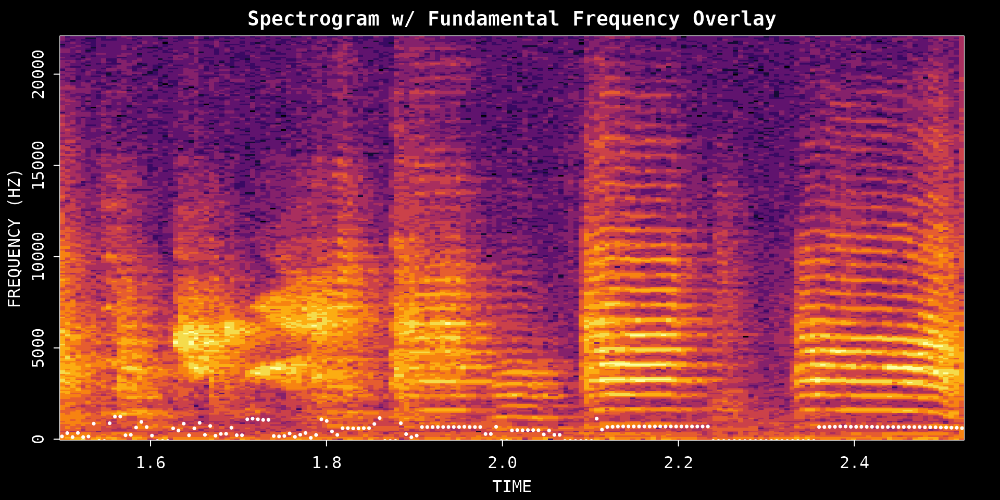
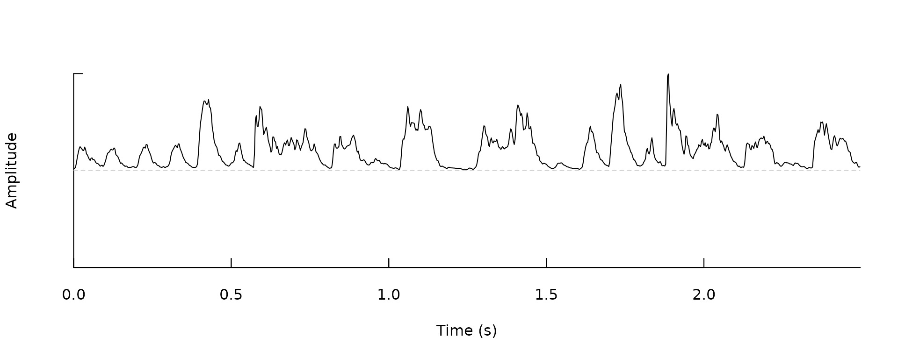

Acoustic Feature Analysis
Source:vignettes/acoustic_feature_analysis.Rmd
acoustic_feature_analysis.RmdIntroduction
This vignette focuses on acoustic measurements you can extract from a single recording after identifying bouts or syllables of interest. It pairs naturally with Overview: ASAP 101 and can also be used after Motif Detection when you want to inspect the structure of selected song segments in more detail.
Prerequisites: Before reading this vignette, we recommend completing:
- Overview: ASAP 101 - Basic ASAP functions
What you will learn:
- How to measure spectral structure with entropy
- How to extract pitch contours from a single song segment
- How to compare amplitude-envelope shapes across bouts and syllables
Overview
These feature-analysis functions are best used after you have already located a time window, bout, or syllable worth inspecting. Because this is a single-WAV tutorial, the vignette stays focused on a few small runnable examples rather than wrapping everything in a larger umbrella workflow. The aim is to show what each feature captures and how to interpret the resulting plots.
Setup
library(ASAP)
#> ASAP v0.3.5 loaded.
wav_file <- system.file("extdata", "zf_example.wav", package = "ASAP")
bouts <- find_bout(
wav_file,
rms_threshold = 0.1,
min_duration = 0.7,
plot = FALSE
)
syllables <- segment(
wav_file,
start_time = 1,
end_time = 5,
flim = c(1, 8),
silence_threshold = 0.01,
min_syllable_ms = 20,
max_syllable_ms = 240,
min_level_db = 10,
verbose = FALSE,
plot = FALSE
)1. Spectral Entropy Analysis
Spectral entropy measures how structured or noisy the frequency distribution is within a sound segment. Harmonic syllables tend to have lower entropy, while broader-band noisy sounds tend to have higher entropy.
entropy_result <- spectral_entropy(
wav_file,
start_time = 1.5,
end_time = 2.5,
method = "wiener",
normalize = TRUE,
plot = TRUE
)
Interpreting entropy values
- Low entropy (near 0): Structured, harmonic sounds
- High entropy (near 1): Noisy, unstructured sounds
2. Fundamental Frequency (Pitch) Analysis
The FF() function extracts the fundamental frequency
contour, which describes how perceived pitch changes over time.
pitch_result <- FF(
wav_file,
start_time = 1.5,
end_time = 2.5,
method = "cepstrum",
fmax = 1400,
threshold = 10,
plot = TRUE
)
Key parameters
-
fmax: Maximum fundamental frequency to detect -
threshold: Higher values filter out uncertain estimates -
method:"cepstrum"(default) or"yin"
Tuning tips
| Parameter | Role | Typical effect |
|---|---|---|
fmax |
Upper bound for pitch search | Raise it if the contour clips at the top; lower it to avoid implausibly high estimates |
threshold |
Confidence filter | Higher values remove uncertain estimates but may leave gaps |
method |
Pitch extraction algorithm |
"cepstrum" is a good default for quick inspection |
3. Amplitude Envelope
The amplitude envelope summarizes how sound intensity changes over time. This is useful for comparing bout or syllable shapes after you have segmented them.
Bout-level envelope
if (!is.null(bouts) && nrow(bouts) >= 1) {
env_bout <- amp_env(
bouts[1, ],
wav_dir = dirname(wav_file),
msmooth = c(256, 50),
amp_normalize = "peak",
plot = TRUE
)
}

Summary
These three functions provide a compact toolkit for exploring acoustic variation in a single recording:
| Function | What it captures |
|---|---|
spectral_entropy() |
Spectral structure or noisiness |
FF() |
Pitch contour over time |
amp_env() |
Amplitude dynamics within bouts or syllables |
For motif-scale acoustic analysis across many recordings, continue to the SAP object workflow starting with Constructing SAP Object.
Session Info
sessionInfo()
#> R version 4.5.3 (2026-03-11)
#> Platform: x86_64-pc-linux-gnu
#> Running under: Ubuntu 24.04.4 LTS
#>
#> Matrix products: default
#> BLAS: /usr/lib/x86_64-linux-gnu/openblas-pthread/libblas.so.3
#> LAPACK: /usr/lib/x86_64-linux-gnu/openblas-pthread/libopenblasp-r0.3.26.so; LAPACK version 3.12.0
#>
#> locale:
#> [1] LC_CTYPE=C.UTF-8 LC_NUMERIC=C LC_TIME=C.UTF-8
#> [4] LC_COLLATE=C.UTF-8 LC_MONETARY=C.UTF-8 LC_MESSAGES=C.UTF-8
#> [7] LC_PAPER=C.UTF-8 LC_NAME=C LC_ADDRESS=C
#> [10] LC_TELEPHONE=C LC_MEASUREMENT=C.UTF-8 LC_IDENTIFICATION=C
#>
#> time zone: UTC
#> tzcode source: system (glibc)
#>
#> attached base packages:
#> [1] stats graphics grDevices utils datasets methods base
#>
#> other attached packages:
#> [1] ASAP_0.3.5
#>
#> loaded via a namespace (and not attached):
#> [1] sass_0.4.10 generics_0.1.4 tidyr_1.3.2 lattice_0.22-9
#> [5] digest_0.6.39 magrittr_2.0.4 evaluate_1.0.5 grid_4.5.3
#> [9] RColorBrewer_1.1-3 fastmap_1.2.0 jsonlite_2.0.0 Matrix_1.7-4
#> [13] tuneR_1.4.7 purrr_1.2.1 scales_1.4.0 pbapply_1.7-4
#> [17] textshaping_1.0.5 jquerylib_0.1.4 cli_3.6.5 rlang_1.1.7
#> [21] pbmcapply_1.5.1 fftw_1.0-9 seewave_2.2.4 cachem_1.1.0
#> [25] yaml_2.3.12 av_0.9.6 tools_4.5.3 parallel_4.5.3
#> [29] dplyr_1.2.0 ggplot2_4.0.2 reticulate_1.45.0 vctrs_0.7.2
#> [33] R6_2.6.1 png_0.1-9 lifecycle_1.0.5 fs_2.0.1
#> [37] MASS_7.3-65 ragg_1.5.2 pkgconfig_2.0.3 desc_1.4.3
#> [41] pkgdown_2.2.0 pillar_1.11.1 bslib_0.10.0 gtable_0.3.6
#> [45] glue_1.8.0 Rcpp_1.1.1 systemfonts_1.3.2 xfun_0.57
#> [49] tibble_3.3.1 tidyselect_1.2.1 knitr_1.51 farver_2.1.2
#> [53] htmltools_0.5.9 patchwork_1.3.2 rmarkdown_2.31 signal_1.8-1
#> [57] compiler_4.5.3 S7_0.2.1